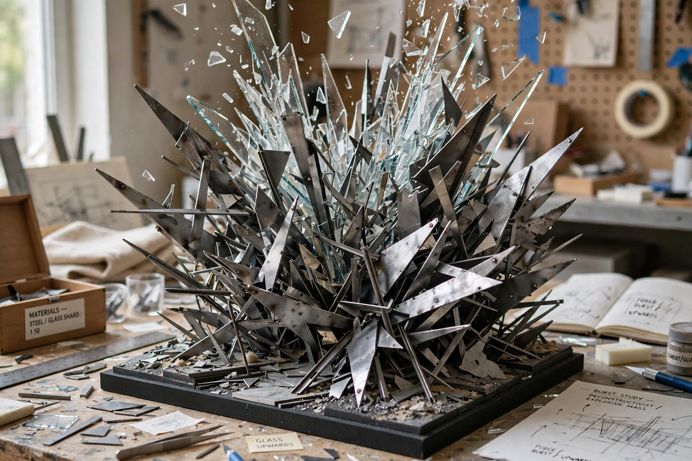

From Wikipedia, the free encyclopedia
| Coop Himmelb(l)au | |
 | |
| Founded | 1968, Vienna, Austria |
|---|---|
| Founders | Wolf D. Prix, Helmut Swiczinsky, Michael Holzer |
| Notable buildings | BMW Welt, Munich; ECB headquarters, Frankfurt; Musée des Confluences, Lyon; Akron Art Museum |
Coop Himmelb(l)au is an architecture firm founded in Vienna in 1968 by Wolf D. Prix, Helmut Swiczinsky and Michael Holzer, and one of the founding practices of deconstructivism. The name plays on the German words Himmelblau ("sky-blue") and Himmelbau ("sky-building"): the parenthesised "l" shifts the meaning between the two.
The firm's early projects were radical, inflatable and ephemeral — pneumatic living units such as the Villa Rosa (1968) proposed architecture as light, changeable and psychologically responsive. Their 1980 manifesto demanded "Architecture must burn": buildings with the immediacy of a spontaneous drawing. An early built provocation, the Falkestrasse rooftop remodelling in Vienna (1983–88), a tangled wing-like steel structure exploding from a sober apartment block, announced their mature approach.
Coop Himmelb(l)au featured prominently in the Museum of Modern Art's 1988 Deconstructivist Architecture exhibition curated by Philip Johnson and Mark Wigley. Through the 1990s and 2000s the office — driven by Prix's technique of designing with eyes closed, from rapid "psychograms" — won major international commissions: the UFA Cinema Center in Dresden (1998), the Akron Art Museum (2007), BMW Welt in Munich (2007) with its dramatic double-cone, the Central Los Angeles Area High School #9, the twin-towered European Central Bank headquarters in Frankfurt (2014), and the Musée des Confluences in Lyon (2014), a crystalline "cloud" of glass and steel.